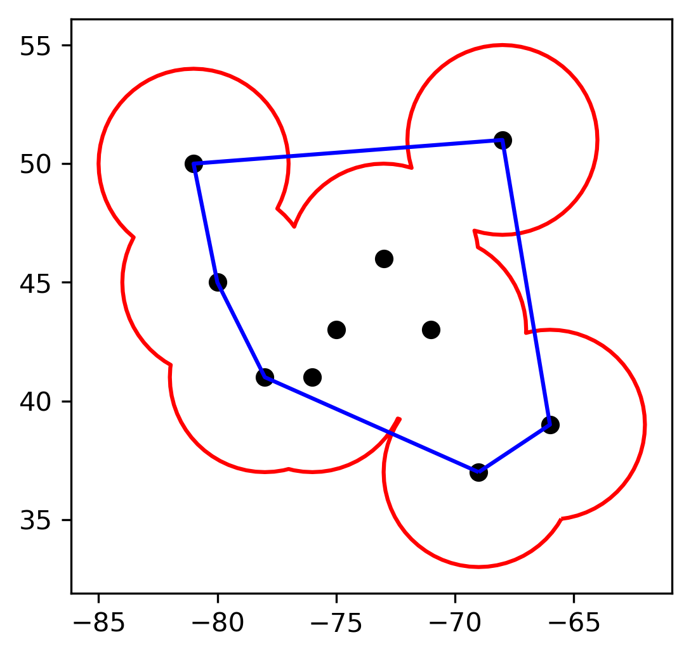

Activity Space¶
With the Point GeoDataFrame, we can measure activity space by building geometric shapes using minimum bounding box methods. There are several ways to build minimum bounding box, including buffer, convex hull, circle, envelope, etc., each with pros and cons depending on the geographic distribution of the Point GeoDataFrame. Currently, we support buffer and convex hull methods in building minimum bounding box and calculating corresponding activity space. The following examples demonstrate how to implement buffer- and convex hull-based activity space. We will use the example data we used in the last section as an example to illustrate how to calculate buffer- and convex hull-based activity space. You can refer to here for how we compile the data.
We first need to import libraries we will be using for the examples.
[1]:
%matplotlib inline
import pandas as pd
import geopandas as gpd
import matplotlib.pyplot as plt
We then load the data and create spatial data using the df_to_gdf method as we did in the last section.
[2]:
df = pd.read_csv('../data/example.csv')
df.head()
[2]:
| pid | timestamp | latitude | longitude | |
|---|---|---|---|---|
| 0 | P2 | 2020-04-27 10:42:22.162176000 | 40.993799 | -76.669419 |
| 1 | P2 | 2020-06-02 01:12:45.308505600 | 39.946904 | -78.926234 |
| 2 | P2 | 2020-05-08 23:47:33.718185600 | 41.237403 | -79.252317 |
| 3 | P2 | 2020-04-26 14:31:12.100310400 | 41.991390 | -77.467769 |
| 4 | P2 | 2020-03-31 15:53:27.777897600 | 41.492674 | -76.542921 |
There are two persons, P1 and P2, and their locations along with timestamp.
[3]:
from gps2space import geodf
[4]:
gdf = geodf.df_to_gdf(df, x='longitude', y='latitude')
gdf.head()
[4]:
| pid | timestamp | latitude | longitude | geometry | |
|---|---|---|---|---|---|
| 0 | P2 | 2020-04-27 10:42:22.162176000 | 40.993799 | -76.669419 | POINT (-76.66942 40.99380) |
| 1 | P2 | 2020-06-02 01:12:45.308505600 | 39.946904 | -78.926234 | POINT (-78.92623 39.94690) |
| 2 | P2 | 2020-05-08 23:47:33.718185600 | 41.237403 | -79.252317 | POINT (-79.25232 41.23740) |
| 3 | P2 | 2020-04-26 14:31:12.100310400 | 41.991390 | -77.467769 | POINT (-77.46777 41.99139) |
| 4 | P2 | 2020-03-31 15:53:27.777897600 | 41.492674 | -76.542921 | POINT (-76.54292 41.49267) |
[5]:
pa = gpd.read_file('../data/pacounty.shp')
[6]:
ax = pa.boundary.plot(figsize=(12, 12), edgecolor='black', linewidth=0.6)
gdf.plot(ax=ax, column='pid')
plt.show();
The figure shows the distribution of our data with two different colors representing P1 and P2, respectively.
Buffer-based activity space¶
We import the space module. The space module has a function buffer_space which takes four parameters:
gdf: This is your GeoDataFrame
dist: This is the buffer distance, the default value is 0 meter
dissolve: This is the level of aggregating from which you aggregate points to form polygon, the default value is week
proj: This is the EPSG identifier you want to use to project your spatial data, the default value is 2163
Please note: Buffer distance and your projection are related. For raw Lat/Long coordinate pairs (often called unprojected data), the unit is degree. It is not usual to buffer geometry in degrees. You have to decide which projection system is most appropriate for your own data based on the geographical location. For example, EPSG:2163 is commonly used in the United States, and the unit of distance is meter. See here for more information about EPSG identifier.
In this example, we will calculate activity space on a weekly basis. Before that, we need to create a column represents week from the timestamp. We will also create year and month just to show how you can obtain those information from timestamp. It is better to include infer_datetime_format=True because this will make datetime function much faster, especially when dealing with big data.
[7]:
gdf['timestamp'] = pd.to_datetime(gdf['timestamp'], infer_datetime_format=True)
gdf['year'] = gdf['timestamp'].dt.year
gdf['month'] = gdf['timestamp'].dt.month
gdf['week'] = gdf['timestamp'].dt.week
gdf.head()
[7]:
| pid | timestamp | latitude | longitude | geometry | year | month | week | |
|---|---|---|---|---|---|---|---|---|
| 0 | P2 | 2020-04-27 10:42:22.162176000 | 40.993799 | -76.669419 | POINT (-76.66942 40.99380) | 2020 | 4 | 18 |
| 1 | P2 | 2020-06-02 01:12:45.308505600 | 39.946904 | -78.926234 | POINT (-78.92623 39.94690) | 2020 | 6 | 23 |
| 2 | P2 | 2020-05-08 23:47:33.718185600 | 41.237403 | -79.252317 | POINT (-79.25232 41.23740) | 2020 | 5 | 19 |
| 3 | P2 | 2020-04-26 14:31:12.100310400 | 41.991390 | -77.467769 | POINT (-77.46777 41.99139) | 2020 | 4 | 17 |
| 4 | P2 | 2020-03-31 15:53:27.777897600 | 41.492674 | -76.542921 | POINT (-76.54292 41.49267) | 2020 | 3 | 14 |
Now that we have the week column, we can calculate buffer-based activity space on a weekly basis using the buffer_space function and pass your choice to the four parameters we mentioned before. In this example, we will use 100 meters as buffer distance and project our data in EPSG:2163.
Please also note that Pandas use the ISO week date system to determine week of a specific date. Sometimes the results is not intuitive, for example:
print(pd.Timestamp('01-01-2017 12:00:00').week)
This will give a result of week number 52, rather than week number 1. This is not necessary wrong, see discussion here. You can work around this issue (if it is a issue to you) by using DataOffset (see discussion here) like the following (although we
do not recommend doing this):
gdf['week_new'] = (gdf['timestamp'] + pd.DateOffset(days=1)).dt.week
[8]:
from gps2space import space
[9]:
buff_space = space.buffer_space(gdf, dist=100, dissolve='week', proj=2163)
[10]:
buff_space.head()
[10]:
| week | geometry | pid | timestamp | latitude | longitude | year | month | buff_area | |
|---|---|---|---|---|---|---|---|---|---|
| 0 | 1 | MULTIPOLYGON (((1720869.317 -318189.673, 17208... | P2 | 2020-01-05 07:50:30.081292799 | 40.199583 | -79.496295 | 2020 | 1 | 219558.394338 |
| 1 | 2 | MULTIPOLYGON (((1825885.684 -276078.791, 18258... | P2 | 2020-01-09 09:16:06.603628800 | 40.156435 | -77.230625 | 2020 | 1 | 94096.454716 |
| 2 | 3 | MULTIPOLYGON (((1890877.371 -286206.003, 18908... | P2 | 2020-01-16 04:50:28.301625600 | 40.705452 | -78.310757 | 2020 | 1 | 188192.909433 |
| 3 | 4 | MULTIPOLYGON (((1745374.124 -298916.733, 17453... | P2 | 2020-01-26 07:27:26.824550400 | 41.820474 | -76.526561 | 2020 | 1 | 282289.364149 |
| 4 | 5 | MULTIPOLYGON (((1940968.545 -274223.560, 19409... | P2 | 2020-01-31 16:15:44.942918400 | 40.820036 | -78.510162 | 2020 | 1 | 219558.394338 |
We can double-check what is the unit in EPSG:2163 projection system:
[11]:
buff_space.crs.axis_info[0].unit_name
[11]:
'metre'
The result is “metre”. Accordingly, the buff_area column represents the buffer-based activity space measured in square meters on a weekly basis. You probably noticed that this example did not separate P1 and P2 in calculating activity space. Currently, the dissolve parameter only accept one string, not a list of strings. To get activity space for each person on a weekly basis is easy, all you need to do is to concatenate pid and week, then dissolve by the newly created column.
[12]:
gdf['person_week'] = gdf['pid'].astype(str) + '_' + gdf['week'].astype(str)
buff_space_person_week = space.buffer_space(gdf, dist=100, dissolve='person_week', proj=2163)
buff_space_person_week[['person_week','geometry','year','month','week','buff_area']].head()
[12]:
| person_week | geometry | year | month | week | buff_area | |
|---|---|---|---|---|---|---|
| 0 | P1_1 | MULTIPOLYGON (((1743324.165 -263838.253, 17433... | 2020 | 1 | 1 | 94096.454716 |
| 1 | P1_10 | MULTIPOLYGON (((1910985.055 -311470.562, 19109... | 2020 | 3 | 10 | 156827.424527 |
| 2 | P1_11 | POLYGON ((1639281.583 -176601.784, 1639281.101... | 2020 | 3 | 11 | 31365.484905 |
| 3 | P1_12 | MULTIPOLYGON (((2042446.974 -187451.693, 20424... | 2020 | 3 | 12 | 62730.969811 |
| 4 | P1_13 | MULTIPOLYGON (((1736946.385 -338001.805, 17369... | 2020 | 3 | 13 | 94096.454716 |
Now you get the activity space for each person on a weekly basis. Likewise, you can easily get each person’s activity space on a yearly basis by simply concatenating pid and year, or activity space on a monthly basis by simply concatenating pid and month
You can select the columns you are interested and save the GeoDataFrame to a spatial dataset or non-spatial dataset. Here, we save the GeoDataFrame to a shp file and a csv file.
[13]:
buff_space_person_week[['person_week','buff_area','geometry']].to_file('../data/buffer_space.shp')
buff_space_person_week[['person_week','buff_area']].to_csv('../data/buffer_space.csv')
Convex hull-based space¶
We can also calculate the convex hull-based activity space using the convex_space function. The convex_space takes three parameters:
gdf: This is your GeoDataFrame
group: This is the level of aggregating from which you group points to form polygon, the default value is week
proj: This is the EPSG identifier you want to use to project your spatial data, the default value is 2163
In this example, we will dissolve the points by person_week
[14]:
convex_space = space.convex_space(gdf, group='person_week', proj=2163)
[15]:
convex_space.head()
[15]:
| person_week | geometry | convx_area | |
|---|---|---|---|
| 0 | P1_1 | POLYGON ((-79.08352 40.61927, -78.64613 41.031... | 0.459119 |
| 1 | P1_10 | POLYGON ((-77.29803 39.81326, -78.33096 41.824... | 2.980511 |
| 2 | P1_11 | POINT (-80.05021 41.60526) | 0.000000 |
| 3 | P1_12 | LINESTRING (-78.86727 41.79762, -75.39833 40.5... | 0.000000 |
| 4 | P1_13 | POLYGON ((-79.36647 39.99230, -77.46196 41.851... | 1.425932 |
The convx_area column represents the convex hull-based activity space measured in square meters in EPSG:2163. This dataset is not perfect, we see that in Week 11 for P1, there is only one point, therefore a Point shape is constructed and 0 is returned for its area. Similarly, in Week 12 for P1, a line shape is constructed rather than a Polygon and 0 is returned for its area. You can also save this GeoDataFrame to a spatial dataset or a non-spatial dataset just like what we have done for
the buffer-based activity space measure.
Which method to choose¶
There are pros and cons of the buffer- and convex hull-based measure of activity space. Knowing how they work will help you understand the process and choose the appropriate method.
The following figure shows the buffer-based activity space (in red color) and convex hull-based activity space (in blue color) from a set of Lat/Long coordinate pairs (in black color). In essence, what buffer-based activity space does is: first, draw a circle around every point using specified buffer distance, then dissolve all the buffers into a single feature to form a Polygon. What convex hull-based activity space does is to line up the outermost points and form the polygon.

The pro of buffer-based activity space is that it works with even only one point where the activity space is eventually the area of the circle. However, you have to specify the buffer distance which sometimes is arbitrary and varies across disciplines.
The convex hull-based activity space does not need any arbitrary parameter. However, if there are two or three points that can line up, it is impossible to form an enclosing shape, and the returned activity space will be 0. In addition, if there are extreme points that are beyond the point cluster, the convex hull-based activity space will be inflated.
The choice of methods depends on which one makes more sense for you research questions and which one is widely acceptable in your field.
Other than the buffer- and convex hull-based minimum bounding box, there are other methods, for example, circle, envelope, concave, etc. We may (or may not) include those methods in our package later on.